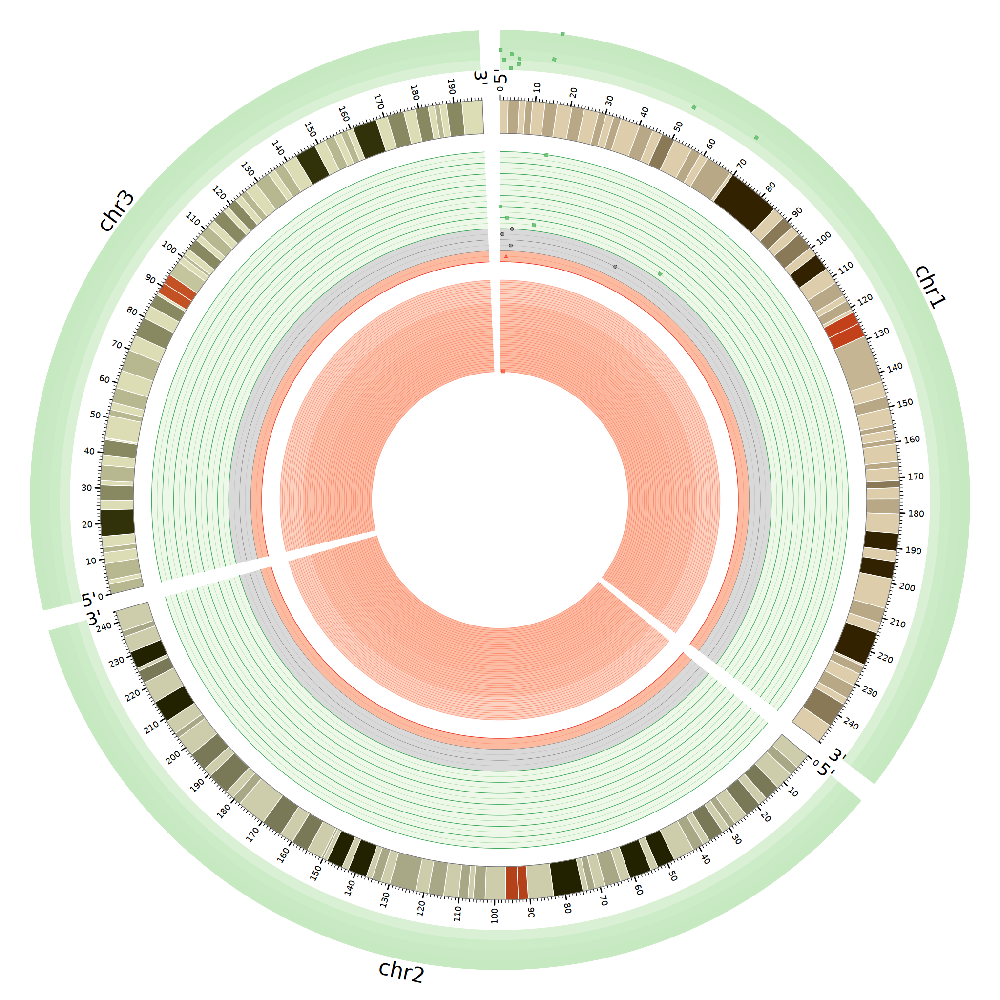

首先就得看看所需要的数据格式是什么样子的
2D的图形都有着共同的属性来控制show- 控制图形的显示type- 决定图形类型 scatter, line, histogram, heatmap, etc.file- 图形的数据文件min/max- 图片轴的范围###解释不太清楚hahahr0/r1- 图形显示的位置glyph- 展示的形状circle, rectangle, or triangleglyph_size- 形状大小color- 颜色stroke_color- 边框颜色stroke_thickness- 边框厚度
通过backgrounds标签内定义条纹填充或图片堆积形的填充
讲真，y0、y1的绝对距离控制背景的填充的径向范围；我是真搞不懂
添加网格线来让背景更好看
我还是老老实实用我的相对距离y0=0.025r ！
使用rule规则来控制不同的形状显示
最后大功告成！呕心沥血的图片呐！
